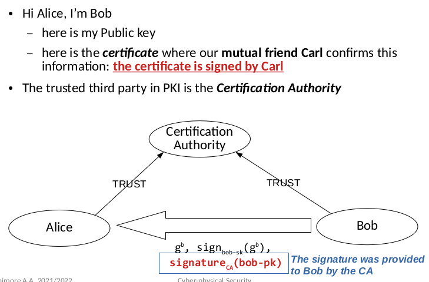

Public Key Distribution
Lecture Info
Appunti presi in classe, seconda lezione in presenza sui protocolli sicuri.
Table of Contents
Introduzione
In questa sezione si discute come distribuire le chiavi pubbliche e fare in modo che siano autenticate.
Si parte quindi dal presupposto che comunque la chiave pubblica non è
un'informazione "intoccabile" e sempre sicura: anch'essa potrebbe
essere manomessa o comunque non autentica.
1 TOFU (trust on first use)
Si basa sul presupposto che la prima connessione non è attaccata attivamente. La prima volta che il client si connette al server si "fida" della sua chiave pubblica.
2 Out of Band
Il processo di autenticazione della chiave pubblica avviene in un canale secondario sicuro (di persona, attraverso una videocamera, ecc…). Si usa quindi un canale più costoso (ma sicuro) per l'autenticazione.
3 Approccio delegato
Si delega l'autenticazione della chiave pubblica ad un'altro ente, una sorta di intermediario.
- Approccio centralizzato: esiste un solo responsabile. Solitamente è una Certification Authority, ossia un'azienda protetta e controllata che si occupa di queste verifiche.
- Approccio distribuito: ci sono diversi responsabili.
La suddetta verifica avviene tramite la distribuzione di un certificato:
- viene firmato dalla Certification Authority;
- contiene la chiave pubblica del server;
- si può visualizzare nei comuni browser di ricerca;
L'approccio delegato permette la costruzione di una "catena" di verifiche gerarchica, in cui delle c.a validano altre c.a. Esistono delle root c.a note a priori da tutti i browser di ricerca, da cui parte la verifica delle chiavi pubbliche intermedie. Per capire meglio, si guardi questo esempio:

3.1 x509 Certificate (standard)
I certificati associano la chiave pubblica al DN (distinguished name), oltre a contenere altre informazioni come:
- la versione del formato;
- la CA che ha rilasciato il certificato;
- un serial number unico;
- un periodo di validità;
- il tipo del certificato (server, client, email);
- altre informazioni sui protocolli crittografici;
- Come viene validato un certificato?
- Si verifica la firma digitale del sender;
- Si verifica il nome dell'entità che lo ha emesso;
- Si verifica che il tipo di certificato sia corretto;
3.2 Self-signed certificates
Questi certificati sono utili in fase di testing quando si vuole validare la chiave pubblica di un server senza passare per una CA. Essenzialmente si crea un certificato "auto-firmato", o comunque non firmato da nessuna CA.